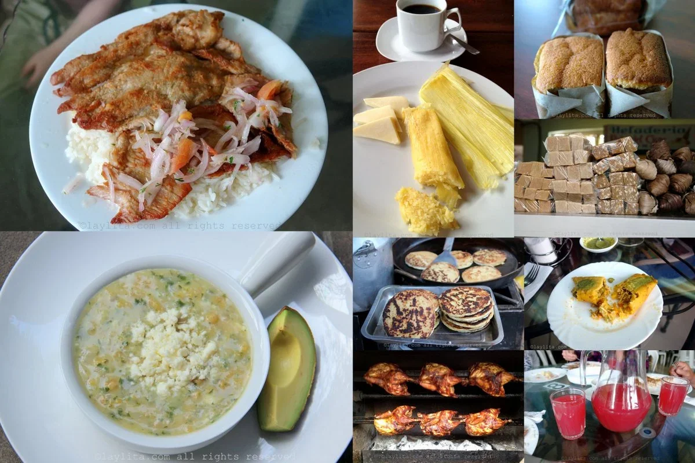
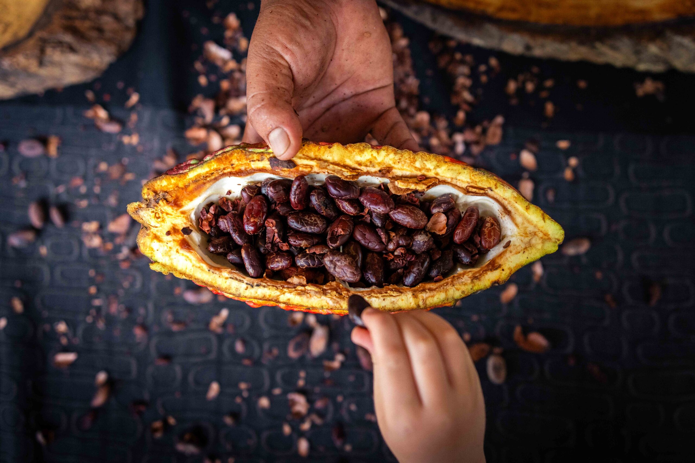

SABORES ANCESTRALES
Ecuador es un país con una gran diversidad cultural y geográfica, lo que se refleja en su gastronomía ancestral. Cada plato cuenta una historia, transmitida de generación en generación, que refleja las tradiciones de las comunidades indígenas y afroecuatorianas, así como la influencia de las diversas regiones del país
La cocina ancestral andina en Ecuador convierte la tierra en un volcán culinario Una técnica de cocina ancestral que consiste en soterrar la comida y calentarla con piedras volcánicas ardientes es conservada con celo por pequeñas comunidades de los Andes ecuatorianos, que mantienen viva así la conexión de la tierra con sus frutos. En medio de cerros y valles de la provincia andina de Imbabura se encuentra la pequeña comunidad de La Magdalena, en la localidad de Angochagua, donde los pueblos kichwas caranquis guardan el secreto de este saber culinario. Se trata de la pachamanca, que ha sobrevivido durante siglos entre los pueblos indígenas de la sierra ecuatoriana y que en la actualidad sirve de reclamo turístico para no dejar caer en el olvido esta tradición. El emprendimiento familiar de Pondo Wasi, que en lengua kichwa significa "Casa de la Vasija de Barro", convierte la tierra en una olla, donde los sabores se mezclan gracias a las piedras volcánicas calentadas, provocando una explosión única de sabores. "Nuestros indígenas descubrieron que dentro de la tierra, con piedras calientes, podían cocinar alimentos mucho más rápido que afuera en ollas", explicó a Efeagro el propietario del lugar Alexis Criollo, sobre una técnica extendida a lo largo de la cordillera. Pero en Ecuador tiene la particularidad de que se prepara con piedras volcánicas, lo que confiere a los platos de la pachamanca un resultado único al tratarse de rocas ígneas que se formaron por el enfriamiento de la lava. El país alberga 98 volcanes, de los que una treintena están activos, potencialmente activos o en erupción, según el Instituto Geofísico.
-

-

-

Ritual para conectarse con la Pachamama
Como toda técnica, la Pachamama requiere de preparación. Y es que antes de disponerse a cocinar los alimentos, los indígenas ecuatorianos acostumbran a realizar un ritual energizante para quitar la negatividad y pedir permiso a la tierra para poder cocinar y disfrutar de los productos que de ella emanan. "Desde nuestra visión, la naturaleza es un lugar sagrado y debemos ingresar realizando ceremonias que nos ayuden a entrar con armonía a la Allpa Mama (madre tierra)", indicó el encargado de los rituales, Segundo De la Torre.
La olla de la tierra
El principio de la pachamanca es crear una especie de olla de presión en un hueco de la tierra, donde se colocan las piedras volcánicas previamente calentadas a fuego como una base sobre la que se disponen hojas de chilca que hace las veces de aislante. Sobre ese hueco cavado se reparten alimentos vegetales como el maíz o habas, y diferentes tipos de carne. Criollo asegura que "de las piedras emanan micronutrientes, que se adhieren a los alimentos", que junto a los materiales aislantes le otorgan "un sabor muy especial y diferente a la comida". La cocción dura alrededor de tres horas y los visitantes ayudan en el proceso de creación de la pachamanca. "Es como una minga (trabajo colectivo con fines sociales, en kichwa)", dice María Tambi, madre del joven emprendedor, quien indica que prefiere cocinar de esta manera porque "las ollas o aluminios hacen daño a nuestra salud". Esta cocina bajo tierra también se practica en otras zonas de la serranía ecuatoriana, como en Cayambe, en la provincia de Pichincha, donde los indígenas cayambis celebran el "Cápac Raymi", fiesta en honor al sol, con comida proveniente del suelo.
La tierra nos da de comer
El objetivo de Pondo Wasi es que se retomen las costumbres y tradiciones de los pueblos originarios de la sierra y no se pierda el conocimiento ancestral. "A los jóvenes indígenas ya no les interesa, incluso nosotros mismos como ecuatorianos, poco nos importa saber sobre nuestra cultura sino que preferimos salir a otros países", reconoce Criollo. La técnica de los hornos de la tierra era empleada en el Neolítico y en Europa se conocen algunos vestigios, pero se desarrolló en Latinoamérica en países como Perú, Chile, Argentina o Ecuador, donde sigue utilizándose hasta el día de hoy. "La tierra nos da de comer", sostiene el indígena ecuatoriano, quien considera que el ser humano no agradece lo suficiente todos los beneficios que brinda, sino por el contrario, lo único que hace es "explotarla, contaminar y cortar arboles".